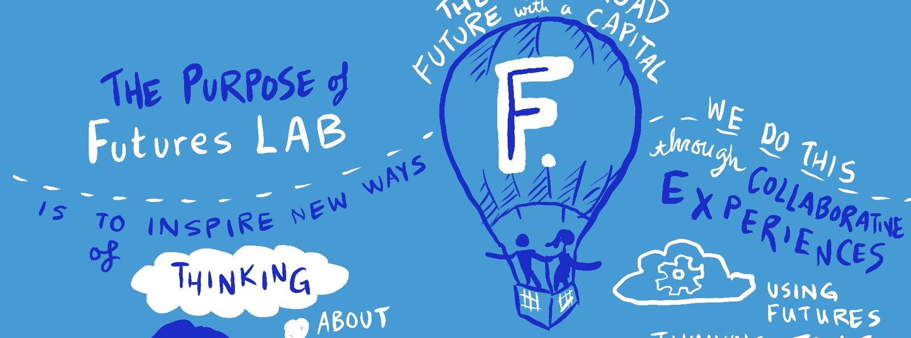

I build AI that makes business more efficient.
Two generators running in production, a hand built analytics dashboard, and an AI literacy site that rebuilds itself from one data file. Everything here shipped, and the hours it saved were measured, not guessed.

Featured AI work
Three builds that are running now, not prototypes.
Product deck generator
Four form fields in, a brand compliant deck out. It replaced a manual build measured at 42 minutes per product across a 27 product queue, about 19 hours of design time per cycle.
read →
Email campaign generator
Compliance lives in the code, not in a checklist afterward. The opt out is a server side constant and the UTM tagging is verified by deterministic code against the finished HTML rather than trusted to the model.
read →
Belle of the Bot
An AI literacy site whose 133 explainer cards, quizzes, and social carousels all generate from one data file, so they cannot drift apart. Every claim is marked measurement, theory, definition, or someone’s position.
visit the site →More work
The rest of the deck, ordered for someone hiring an AI builder.

Analytics build and dashboard
Hand rolled against the Analytics Data API with service account authentication and two tier caching. Twelve report queries, zero recurring cost, no dashboard subscription.

Futures Lab, drawn live and then animated
A session on the future of food, drawn live and then rebuilt as a two minute thirty six second hand lettered animation, entirely inside Salesforce’s brand blues.

A studio dashboard for my art business
Five revenue channels modeled into three tables, with restock alerts and a tax envelope that compute themselves. The source of truth stayed a Google Sheet on purpose, because a tool you will not update is a tool that lies.

Drive the 505
A working app I built and shipped: modules, flashcards, quizzes and an interactive map of the city grid. Open it and use it, no login.

CambiumPak brand system
The stand in brand my employer work is demonstrated on: 11 product families, 17 SKUs and 44 documents, all invented so the real work can be shown without exposing a client.
open to marketing operations, analytics and martech roles
Let’s talk.
My story is adoption and enablement rather than model development. I find the 42 minute task nobody has questioned, and I replace it with something that holds the rules in code.
If you want the architecture behind any of this, ask me and I will walk you through it.